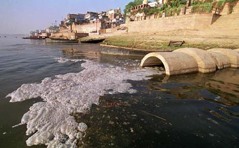

TIPOS DE CONTAMINACION
CONTAMINACION DE AGUA
Es el tipo de contaminación que supone la contaminación distintos cuerpos de agua. Varias criaturas acuáticas dependen de estos cuerpos de agua y sus características naturales nutritivos para apoyar su vida.
Contaminación del agua

CONTAMINACION DE AIRE
El monóxido de carbono y óxido de azufre se consideran contaminantes primarios. Estos contaminantes sufren cambios químicos y causan efectos secundarios tales como smog. La contaminación del aire se define por la existencia y la integración de los compuestos tóxicos en el ambiente en concentraciones lo suficientemente altas como para causar daño a los seres humanos, los animales y el medio ambiente de la Tierra.
CONTAMINACION DE AIRE


 1
1 3
3 4
4 5
5 6
6